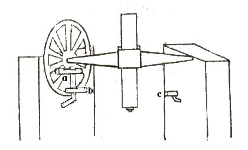
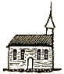
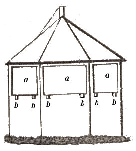
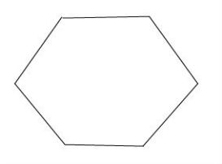
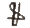

Ich habe die Antwort auf Ihren gütigen Brief, lieber Professor! bis iezt verschoben, um Ihnen zugleich die Resultate der von mir berechneten Repsold'schen Declinationsbeobachtungen zu übersenden. Sie sind alle in dem Zeitraume vom 5. Junius 1804 bis zum 2. Aug. desselben Jahrs angestellt. An Bessel habe ich geschrieben und um bessere Declinationen aus Bradley gebeten, bis dahin will ich die Rechnung, so wie sie iezt geführt ist, mit mittlerer Refraction lassen. Am zuverlässigsten sind wohl die Resultate aus den beyden Culminationen des Polarsterns (an demselben Tage beobachtet), da keine Declination dabey entrirt. Aber auch die aus einzelnen stimmen, wie Sie sehen, vortrefflich unter sich, und lassen sich mit den aus beyden gezogenen sehr gut vereinen, wenn man nur die Zach'sche Declination um 3 $''$ ändert. Wenn der Fehler im Instrumente läge, müssten alle, sowohl einzelne, als verbundene Culminationen dasselbe geben. Die übrigen Declinationen sind die Maskelynschen aus Zach's Aberrat. Tafeln. Aberrat. und Nutat. ist, wo es anging, aus Zach's Tafeln, sonst aus Ihren allgemeinen berechnet. Bey dem Polarstern habe ich, obgleich eine Art Tafel in Zach's Werke ist, unmittelbar aus Ihren allgemeinen gerechnet.
Polhöhe der Repsoldischen Sternwarte in Hamburg
| Polarstern (beyde Culminat.) | 53°32 |
||
| 49, 7 | |||
| 48, 8 | Mittel 49 |
||
| 48, 2 | |||
| 48, 2 | |||
| (obere Culminat.) ... | 53, 9 | ||
| 54, 3 | |||
| 51, 9 | Mittel 52 |
||
| 52, 2 | |||
| 52, 0 | |||
| (untere Culminat.) ... | 47, 2 | Mittel 49 |
|
| 47, 0 | |||
| 44, 0 | |||
| 44, 5 | |||
| 45, 2 | Mittel 45 |
||
| 45, 7 | |||
| 44, 2 | |||
| 44, 6 | |||
| 44, 7 | |||
| 44, 6 | |||
|
|
49, 4 | ||
| 54, 4 | |||
|
|
50, 0 | ||
| 51, 0 | |||
| 52, 3 | |||
| 49, 1 | |||
|
|
50, 2 | ||
| 46, 9 | |||
| 49, 6 | |||
| 49, 8 | |||
| 50, 5 | |||
| 51, 5 | |||
|
|
48, 2 | ||
| 50, 3 | |||
| Regulus ... | 55, 6 | ||
| Arcturus ... | 55, 6 | ||
| 52, 1 | |||
| 52, 3 |
| Spica ... | 53°32 |
||
| 57, 2 | |||
| 57, 3 | |||
| 51, 5 | |||
| Denebola ... | 54, 1 | ||
| 52, 3 | |||
| 52, 4 | |||
| 54, 8 | |||
| 52, 9 | |||
| Sirius | 56, 8 |
Das kleine Observatorium, auf welchem diese Beobachtungen angestellt sind, lag auf dem Theile des Hamburger Walls, der gegenwärtig die Elbhöhe genannt wird. Nach Reinke's Messungen war der Meridiankreis damals 129,1 Toisen südlich und 240,1 Toisen westlich vom Michaelis-Thurm. Die Coordinaten des Meridiankreises der jetzigen Hamburger Sternwarte gegen Michaelis-Thurm sind 154,8 Toisen nördlich und 172,5 Toisen westlich. Der alte Repsold'sche Meridiankreis war demnach 283,9 Toisen südlicher u. 67,6 Toisen westlicher aufgestellt als der jetzige, und 30,8 Toisen nördlicher, 983,1 Toisen östlicher als der Meridiankreis der Altonaer Sternwarte. P.
Bey den meisten geben, wie Sie leicht sehen werden, die
Piazzischen Declinationen weit bessere Resultate. Es scheint
mir aber doch schon so die Uebereinstimmung erstaunend.
Dies sind die einzigen von allen Beobachtungen, die man zur

Polhöhe brauchen kann,
weil nachher der Kreis
nicht umgelegt ist, so dass
man keine Collimation
kennt. Durch Umlegen
ist sie leicht und genau
zu finden. Am Kreise
selbst sitzt ein Niveau
das Miscroscop
| Zahl der Beobb. | ||||||
| No. des | Göttingen | Altona | ||||
| Sterns | Z. D. in Göttingen | Z. D. in Altona | Amplitude | Gewicht | O W | O W |
| I | 1° 26' 29”20 n | 0° 34 ' 29”46 s | 2° 0' 58”66 | 3,333 | 2 6 | 5 3 |
| II | 0 28 7,94 s | 2 29 7,21 s | 59,27 | 4,319 | 3 5 | 7 4 |
| III | 0 42 32,27 s | 2 43 30,20 s | 57,93 | 3,333 | 3 5 | 6 2 |
| IV | 2 6 7,22 n | 0 5 9,67 n | 57,55 | 4,404 | 3 5 | 8 4 |
| V | 1 28 35,40 n | 0 32 24,81 s | 60,21 | 3,556 | 2 4 | 8 4 |
| VI | 0 28 18,66 s | 2 29 18,14 s | 59,48 | 4,211 | 3 5 | 6 4 |
| VII | 0 15 17,61 s | 2 16 15,52 s | 57,91 | 3,775 | 3 4 | 7 3 |
| VIII | 0 13 20,92 n | 1 16 23,60 s | sind wol ver- | 3 4 | 5 4 | |
| schied. Sterne | ||||||
| IX | 0 0 16,26 s | 2 1 14,94 s | 58,68 | 4,898 | 5 4 | 6 5 |
| X | 0 32 32,83 n | 1 30 26,75 s | 59,58 | 3,692 | 3 4 | 4 4 |
| XI | 0 3 46,77 s | 2 4 45,28 s | 58,46 | 4,000 | 4 4 | 4 4 |
| Mittel | 2° 0' 58”77 | 39,521 |
Alle hiesigen Beobachtungen sind meiner Krankheit wegen von Hansen gemacht.
26sten an, oder wenn ich wider Erwarten später dahin kommen sollte, von meiner Ankunft an, täglich etwa von 2 $\frac{1}{2}$ bis 3 Uhr Licht nach Neuwerk zur Aufforderung geschickt werden, bis es erwiedert wird; oder umgekehrt, Licht das von dorther kommt, das erstemahl wo ich es sehe, einige Minuten hindurch erwiedert werden. Der Thurm ist sehr kenntlich,  nur ganz vermauert, so dass ich von aussen über das Kirchendach durch Leitern hinauf muss, auch sehr eng, ich glaube nur 5 Fuss im Durchmesser. Ich brauche übrigens das Heliotroplicht von Neuwerk Vormittags gar nicht, und Nachmittags nur von 3 Uhr an bis ☉ Untergang. Von Langwarden gehe ich demnächst erst nach Jever und kann dem Neuwerker Heliotropisten meinen bevorstehenden Abgang durch das Attentionszeichen tactmässig wechselnde Bedeckung und Oeffnung des Lichts (immer 0''4 offen und eben so lange zu) anzeigen, welches auf der Stelle eben so zu beantworten ist. Ueber das Weitere auf Wangeroog kann ich aber in diesem Augenblick noch nichts Gewisses bestimmen.
Noch muss ich die Bitte beifügen, dass der Platz, wo der Heliotrop in Neuwerk aufgestellt wird, auf jeden Fall so kenntlich und dauerhaft bezeichnet wird, dass er auch wo möglich noch nach Jahr und Tag genau wieder aufgefunden werden kann. Ich selbst pflege in ähnlichen Fällen durch die drei Fussspitzen einen Kreis zu beschreiben, dessen Centrum als Zielpunkt betrachtet wird. Bei meinen beiden neuesten Heliotropen ist noch das Centrum selbst durch eine Spitze bezeichnet, welches viel Bequemlichkeit verschafft. Hat Rumpf die für Davy schon eingeliefert?
Endlich bemerke ich noch, dass ich zwar die $\frac{1}{4}$ Piepe Wein recht gern ganz annehme; da ich indessen selbst fast gar keinen und meine Frau nur wenig trinkt, so wird dieser Vorrath leicht drei oder mehrere Jahre ausreichen, und ich würde also gar nichts dawider haben, wenn Sie vielleicht jemand einen Gefallen damit erzeigen, dass Sie einen Theil davon allenfalls bis zur Hälfte oder $\frac{2}{3}$ des $\frac{1}{4}$ abliessen.
Ich eile, mein theuerster Freund und Gönner, Ihre beiden gütigen Briefe zu beantworten. Der Schlüssel ist unstreitig hier geblieben, ich habe aber eine solche Menge, dass ich ihn nicht aussuchen kann und Sie bitten muss, auf meine Kosten einen neuen machen zu lassen.
Dass Pennington seinen Gang plötzlich ändere, habe ich Ihnen vorhergesagt. Meine Datum's sind alle astronomisch.
Seit etwa 3 Wochen bin ich unpässlich, ohne krank zu seyn. Sonst wäre ich jezt schon in Copenhagen.
Unglücklicherweise habe ich keine Zeichnung von meinem Hause, und es steht zerlegt auf dem Boden des Gasthofes in Ahrensburg. Roh mit der Feder gezeichnet sieht es so aus:


Eine Seitenfläche ist
die Thür; über der Thür
ist oben eine Klappe für
den Nordstern.
a, a, a etc. sind Luken, die bei
b Scharniere haben, um
niederge
klappt zu werden. Mit seinem Kasten
ganz fertig kostet es 250 M  Courant
(14 = 1 Louisd'or oder Friedrichs
d'or). Soll ich Ihnen eines machen
lassen, oder befehlen Sie, dass ich
einen Officier nach Ahrensburg sende?
Wegen des dazu gehörigen Segel
tuchs glaube ich nicht, dass Sie es
dort für einen so geringen Preis er
halten können. 18 Friedrichsd'or ist
nicht viel für die
Bequemlichkeit, die es gewährt.
Dieser Brief enthält Ihre Dreyecke
zum 7ten Stück. Sie sind aber
schlecht gestochen, und Ihre Helio
tropen sollen besser werden. Ich bitte
bald darum.
Aus dem 7ten Stücke werden Sie sehen, wenn Sie
es nicht schon sonst
wissen, dass Pond's Kreis ohne dass
Von dem Airy-Christieschen Raport hatte mir Herr von Humboldt schon vor vierzehn Tagen einen ausführlichen Extract geschrieben, namentlich von allem was meine Arbeiten und Apparate betrifft. Sie, mein theuerster Freund, nennen dieß „Unsinn”. Herr von Humboldt drückt sich etwas milder aus und findet die Einwendungen nur „albern”. Ich hatte Humboldt damals hierauf geantwortet, daß zwar wir beiden, er und ich, von unserm Standpunkte aus solche Einwendungen [[„albern”]] finden müßten, dass sich jedoch auch etwas zur Entschuldigung sagen lasse; in der That ich selbst habe vor 4 $\frac{1}{2}$ Jahren, wo ich das Wesen des Magnetismus noch nicht hinlänglich kannte, und wo Erfahrungen über schwerere Nadeln noch gar nicht existirten, meine Uebergänge von 1-löthigen Nadeln zu 4- und 8-löthigen, dann zu 1-pfündigen; dann später den von 1-pfündigen zu 2- und 4-pfündigen nur mit Furchtsamkeit gemacht, und diese Furchtsamkeit erst verloren, als theils alle Erfahrungen ohne Ausnahme die immer steigenden Vorzüge der schwereren vor leichtern bestätigten, theils meine Einsicht in das Wesen des Magnetismus so klar geworden war, dass ich die Nothwendigkeit jenes Vorzugs a priori übersehen konnte.
Auf unserm jetzigen Standpunkte stehen nun Airy-Christie nicht. Von dem Wesen des Magnetismus haben sie wohl noch ganz verworrene Begriffe, und die Erfahrungen kennen sie nicht, nach der Sitte der Engländer und Franzosen sich um das was im Auslande geschieht wenig zu bekümmern. Die Deutschen tadeln diese Sitte, nicht ganz mit Unrecht; aber meiner Meinung nach, gehen die Deutschen wieder auf der andern Seite viel zu weit.
Ich meines Theils wenigstens nehme zwar alle wahren wissenschaftlichen Fortschritte, die jenseits des Rheins und jenseits des Canals gemacht werden, freudig auf, aber, wenn sie drüben dumme Streiche machen oder Albernheiten vorbringen, so ist dabei weiter nichts zu thun, als eben gar keine Notiz davon nehmen. Mit einer Widerlegung erzeigte man ihnen viel zu viel Ehre. Es wird zwar allerdings zu bedauern sein, wenn die großen Mittel, welches jene reiche Land aufwenden kann, auf eine unverständige Art verwandt werden sollten. Ich meines Orts werde mich aber in die Sache nicht ohne bestimmt gegebene Veranlassung mischen.
An Herrn Airy werde ich also, wie Sie leicht denken können, nicht schreiben. Wollen die Engländer mein Urtheil wissen, so mögen sie es suchen, aufdringen ist meine Sache nicht.
Dagegen aber stehe ich nicht an, Ihnen die sich darbietenden Bemerkungen zu den betreffenden Stellen des Reports mitzutheilen
1) Es wird gesagt, von meinen Methoden und Arbeiten zu sprechen sei deswegen überflüssig, da der Societät das von mir derselben übergebene Memoir vorliege
Damit hat es nun folgende Bewandtniss.
Der Societät habe ich gar Nichts vorgelegt. Bloss dem Herzog von Sussex habe ich Ende 1832 einen Abdruck des Stücks der G. G. A. geschickt, das eine kurze Nachricht von meiner im December 1832 gehaltenen Vorlesung enthält (und auch in Ihren A. N. abgedruckt wurde). Diesen Artikel hatte der Herzog (vermuthlich durch Herrn König) in's Englische übersetzen lassen, und diese (beiläufig gesagt, sehr verstümmelte und zum Theil unrichtige) Uebersetzung meines ersten Aufsatzes ist alles was der Societät vorliegt.
„I have not yet been able to refer to the papers which you specified”
Es erhellet nicht, ob er sich Mühe gegeben hat, diese Papers zu erhalten. Aber man kann nicht zweifeln, daß er auch am 8. Junius 1836 noch gar nichts davon gelesen hatte. Mit diesem Lesen oder Nichtlesen mögen es nun die Engländer halten, wie ihnen beliebt. Es bleibt jedoch ein Zeichen von Muth, daß sie unternehmen über eine Sache zu urtheilen, wovon sie nicht viel mehr wie nichts wissen (Ich meine nemlich, wenn sie, wie ich, unter schweren Stäben nur die größten, wenigstens 4 oder 25pfündigen verstehen, von deren Succeß eben nur aus dem spätem Aufsatz etwas zu ersehen ist.
2) Die Reporters haben die Besorgniss (apprehension), dass schwere Stäbe unempfindlich sein für die schnellen Veränderungen, die wahrscheinlich in plötzlichen Veränderungen der Atmosphäre ihren Grund hätten.
Dazu bemerke ich:
A. Ich weiss nicht, warum die Herren es für wahrscheinlich halten, dass die plötzlichen magnetischen Aenderungen in der Atmosphäre ihren Grund haben sollten.
Ich sehe gar keinen vernünftigen Grund zu einer solchen Wahrscheinlichkeit. Nach allen unsern Erfahrungen haben selbst nahe Gewitter keinen hervortretenden Einfluss.
Der einzige atmosphärische Einfluss, der constirt,
wobey er den meisten Vortheil hat, kann er den Louisd'or zu 14 Th. 1 ß rechnen. Die Dioptrik und seine Bücher können wohl zusammengepackt werden, und ich erwarte Ihre Bestimmung, ob ich sie mit der Post absenden soll.
Montag, d. 11ten werden Hipp's Instrumente verkauft, unter andern auch der 5zöllige Troughton'sche Sextant. Mir dünkt, das wäre recht ein Instrument für Rennenkampf, wenn er sich mit der Praxis befassen will, Repsold meint für 13–14 Louisd'or würde es zu bekommen seyn. Da die Briefe aber hier nur Montags und Donnerstags ankommen, so würde, wenn er nicht seinen Brief an mich, nach Hamburg addressirt, bey Herrn Repsold abzugeben, oder lieber gradezu an Repsold, seine Commission zu spät kommen.
G Gestern habe ich die Auflösung an Lindenau gesandt. Die Wurzeln der Gleichung für Ihre Zahlen sind[P]Vergl. Monatliche Correspondenz. Bd. XX. Seite 287.: $$ + 0,945495\\ + 0,395635\\ - 0,637596\\ + 3,443930\\ $$ von denen 3 gleich durch die Bedingungen der Aufgabe wegfallen, und nur die zweyte bleibt, es ist also:
$$ \begin{eqnarray*} h & = & 23° 18' 20'',3\\ t & = & 5^{h} 36' 16'',5\\ A & = & 101° 1' 29'',5 \end{eqnarray*} $$Man könnte noch als eine Aufgabe vorschlagen, welche von den Stundenlinien, die zwischen der Zone von + 25°, und - 25° Declination begriffen sind, am meisten gekrümmt sey? Ich weis aber in diesem Augenblick es noch nicht in Gleichung zu setzen.
Der Professor Struve kam im Museum zu mir und bat mich, ihm zu sagen, ob nicht eine kleine Unrichtigkeit im Ausdrucke auf ihrer ersten Seite[P]Der Theoria m. c. c. sey, wo man, wie er meinte, statt inversa, directa lesen müsse, damit $\frac{g}{t\sqrt{p\sqrt{(1+\mu }}} = \mathrm {Const.}$ 16 Er bot mir zugleich 3–4 Quartblätter an, die er vollgerechnet hatte, und die mir zum Leitfaden dienen sollten. Ich verbat natürlich seine Papiere und zeigte ihm mit 2 Kreidestrichen an der Billardtafel, dass er nicht recht klug sey. Gestern schrieb er mir ein Billet, ob ich ihm nicht einen Beweis, der durch alle 4 Quadranten gölte, geben könne, dass
Ihren aufrichtigsten Verehrer und wärmsten Freund
Schumacher.
Altona, d. 30sten December 1809.